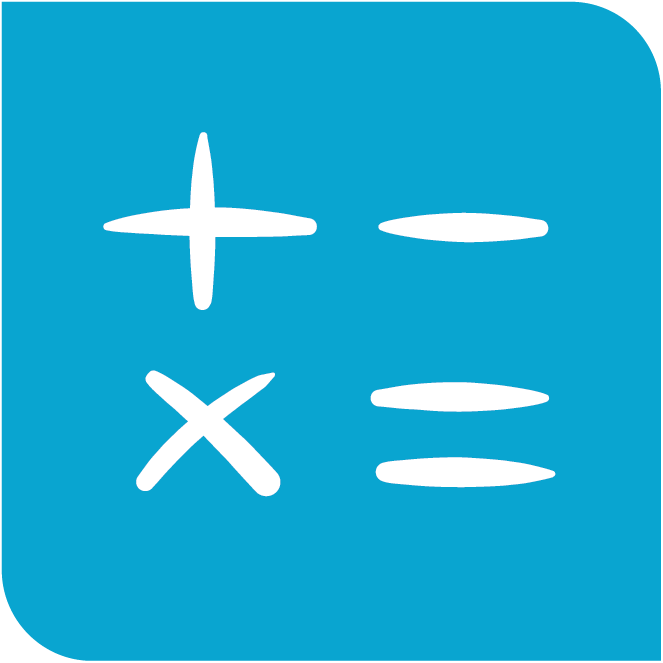
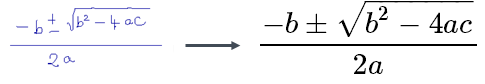
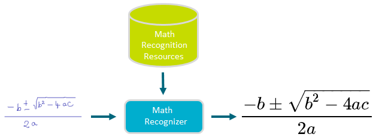

MyScript recognizes equations and mathematical and scientific formulae and expressions.

The math recognizer does this by recognizing various subsets of elements that make up typical equations.
The below example shows a math recognition request where the following are to be specified:
<script>
var result = document.getElementById("math-result");
var canvas = document.getElementById("math-canvas");
var context = canvas.getContext("2d");
var pointerId;
var url = 'http://cloud.myscript.com/api/v3.0/recognition/rest';
var applicationKey = 'xxxxxxxx-xxxx-xxxx-xxxx-xxxxxxxxxxxx';
var hmacKey = 'xxxxxxxx-xxxx-xxxx-xxxx-xxxxxxxxxxxx';
var stroker = new MyScript.Stroker();
var mathRenderer = new MyScript.MathRenderer();
var mathRecognizer = new MyScript.MathRecognizer(url);
mathRecognizer.getParameters().setResultTypes(['LATEX']);
var instanceId;
function doRecognition () {
mathRecognizer.doSimpleRecognition(applicationKey, instanceId, stroker.getStrokes(), hmacKey).then(
function (data) {
if (!instanceId) {
instanceId = data.getInstanceId();
} else if (instanceId !== data.getInstanceId()) {
return;
}
var results = data.getMathDocument().getResultElements();
for (var i in results) {
if (results[i] instanceof MyScript.MathLaTexResultElement) {
result.innerText = results[i].getValue();
}
}
}
)
}
function onPointerDown (event, x, y) {
mathRenderer.drawStart(event, x, y);
stroker.startStrokeWriting(x, y);
}
function onPointerMove (event, x, y) {
mathRenderer.drawContinue(event, x, y, context);
stroker.continueStrokeWriting(x, y);
}
function onPointerUp (event, x, y) {
mathRenderer.drawEnd(event, x, y, context);
stroker.endStrokeWriting(event);
if (!stroker.isEmpty()) {
doRecognition();
}
}
/**
* Firefox missing offsetX and offsetY properties hack
* @param event
* @returns {{x: number, y: number}}
*/
function getOffset (event) {
var element = event.target;
var offset = {x: 0, y: 0};
while (element.offsetParent) {
offset.x += element.offsetLeft;
offset.y += element.offsetTop;
element = element.offsetParent;
}
offset.x = event.pageX - offset.x;
offset.y = event.pageY - offset.y;
return offset;
}
function getX (event) {
if (event.offsetX) {
return event.offsetX;
}
return getOffset(event).x;
}
function getY (event) {
if (event.offsetY) {
return event.offsetY;
}
return getOffset(event).y;
}
canvas.addEventListener('mousedown', function (event) {
if (!pointerId) {
pointerId = event.pointerId;
onPointerDown(event, getX(event), getY(event));
}
}, false);
canvas.addEventListener('mousemove', function (event) {
if (pointerId === event.pointerId) {
onPointerMove(event, getX(event), getY(event));
}
}, false);
canvas.addEventListener('mouseup', function (event) {
if (pointerId === event.pointerId) {
onPointerUp(event, getX(event), getY(event));
pointerId = undefined;
}
}, false);
canvas.addEventListener('mouseleave', function (event) {
if (pointerId === event.pointerId) {
onPointerUp(event, getX(event), getY(event));
pointerId = undefined;
}
}, false);
</script>A list of limitations for math recognition can be found in the appendix.
See the reference guide for information on the mandatory and optional parameters needed for math recognition.

The math recognizer uses resources to know how an equation can be broken into various parts, laid out as fractions, using square roots, brackets, etc. and the various symbols and characters that can be found in each of those parts.
The math recognizer requires only the input. You do not need to define a language, as you do with text recognition. You only need to specify if you want the result in LaTeX or MathML format.